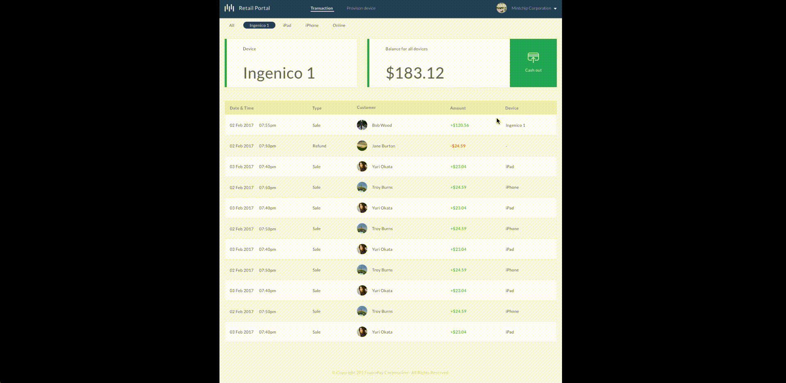

<<<<<<< HEAD
<<<<<<< HEAD
=======
>>>>>>> parent of 11ea11a... apply IE and Edge fix to universal
=======
>>>>>>> parent of 11ea11a... apply IE and Edge fix to universal
MintChip Retail Portal: A Management System for Merchants
Product Design 7 min read
1-1
The MintChip Retail Portal is an online application for merchants accepting MintChip payments to better manage transactions, provision multiple devices and easily cash out.
MintChip is a digital currency that provides the underlying system to facilitate the exchange of value between two parties in real-time without intermediaries. Forbe has a video explainning how MintChip works.
Originally created by the Royal Canadian Mint, MintChip was acquired by nanopay in Jan 2016. Later the same year, nanopay advanced the technology by making MintChip payments available on Ingenico terminals. nanopay launched the P2P and retail payment solution - the MintChip app for consumers and merchants in June 2016, allowing people to process payments and transfer money instantly.
January 2017, I joined nanopay as a product designer. My first challenge was to design a management system for merchants who are accepting payments in MintChip.
A Deep Dive into the Problem Space
To better understand the problem, I worked closely with the customer success representative to find out what the merchants really need. The first step was simply going for a visit and opening up the topic with some small talks. We talked with 8 merchants with 14 merchants onboard in Liberty Village and got some great insights. The following is some highlight words from our note:
"We have two iPads, that means need to connect bank account twice, and cash out twice to get our money"
"I like the way MintChip works fast and easy, but there are too much sensitive information in the merchant app and it is dangerous just in the app itself"
"I don't want the server to touch the cash out setting so basically I'm taking care of all the MintChip payments"
"At one time a customer mistakenly tipped us 100 dollars and we had to give him cash back because there is no refund option"
"There are 3 devices in our place, two iPads, one terminal, and each time if there is something, we'll need to look through all three of them"
We noticed merchants were frustrated about the repeated actions across multiple devices and the unrestricted access to the sensitive information in the merchant app.
1-2 / We created the persona after talking with merchants and organizing the notes.
Project Goals
The design needs to reflect both user needs and the business goals.I also incorporated the requirements and the vision from the business side.
Follow the MintChip branding to convey a consistent, friendly but impactful visual experience
Design a smooth and painless flow to manage transactions and cash out across multiple devices
Securely protect merchant's sensitive information
Solution 1: All Transactions in ONE Place
It used to be a pain for merchants to cash out because the MintChip balance is stored separately in different individual devices. In order to cash out, a merchant will need to cash out multiple times on multiple devices. Especially if the cashout frequency is daily, it can be a big pain.
1-3 / The old flow only has two steps, but with multiple devices, it became a problem.
But with the merchant portal, they can easily cash out all the balance or balance from the individual device, at one click. Plus, with all transactions at one time, it becomes easier to monitor and manage the transactions.
The before and after user journey maps below shows how the retail portal can help merchant cash out and manage transactions painlessly.
1-4,1-5 / From the user journey map before and after, we can see the portal reduced the repeat actions the users do when cashing out with different devices.
Besides the benefit of easy cashout, the new cashout flow also allows merchants to manage all the bank accounts in one place, no more multiple verifications, easily disable and reconnect.

1-6 / Prototype simulating how a merchant can cash out all the MintChip balance together: choose cashout option -change the bank account - modify cashout amount- confirmation
Solution 2: Dumb the Merchant App - Sensitive Info Exclusively in the Portal
One of the biggest concern for the merchants is the security of sensitive information, which includes bank accounts, MintChip balance, etc. Most of the time, the owner only wants the server to have access to accept payments and view transactions, which results in that only either the owner or manager is the only one who uses the MintChip device.
1-7 / The old MintChip merchant app allows users to access sensitive information, like password and cashout settings
We tried using user access control based on user login information, but the result was disappointing. The device is shared by all the workers at the same workplace, and switching accounts during the busy hours is a huge pain.
In the research, we noticed that sensitive actions like refunding, cashout don't happen frequently and should be securely managed by the managers. So we made a decision on moving all the sensitive actions to the portal which only managers have access to, and made the merchant app only capable of accepting payments and view transactions.
1-8 / The new MintChip merchant app only allows users to accept payments, view transactions and turn on/off the tip toggle
All the other actions like the bank account, cash out, including refund, are exclusively moved to the portal, so only the person who has access to the portal can touch those settings, making the MintChip balance securely managed.
1-9,1-10 /The red part shows the repeat process Keiko has to do when looking for a specific transaction, which is greatly improved by the retail portal. Also, the refund is possible in the portal so no more cash refund and sensitive information are securely protected.
The refund option solved the problem of the mess with sales report when using a different method other than original format to refund.The two transactions with different sale and refund greatly help the accountant out of the confusion.
1-11 / Prototype simulating how a merchant can refund within the MintChip ecosystem
Other Highlights
The MintChip Retail Portal is a separated management system from the merchant app and consumer app, so we design a registration and onboarding flow to navigate the merchants finish everything they need before accepting payments. The bank account and device management also have a fresh look and feel based on the foundation of MintChip branding.
1-12 / We created an overall user flow combining different flows like registration, forgot password, add a device, etc.1-13 / Above shows the bank account, onboarding and device page.1-14 / The style guide includes Colors, Actions, Lists, Forms and Icons.
User Testing
During the design process, we've been constantly asking for feedback. I We did user testings on both the low-fi and high-fi mockups with invited merchants.
1-15 / The low-fi mockups I made with Balsamiq. I used it to test the major flows.
We interviewed 3 merchants and asked them to finish simple tasks like registration, cash out and refund. Based on observation and casual talks after the testing, we put what we need to iterate on together.
1-16 / I moved the sections for different devices from middle to top, with the big title indicating the current device. Also some changes on address setting and cash out settings.
The Landing Page
I was also responsible for designing the landing page for the retail portal.I worked closely with the customer success representative and the marketing team to finalize the content and structure of the site. We followed this 3-step-methodology:
Define the user flow
how users go to our website, how we want to guide them to reach to us
They know us from the brochure - search online - go to the website - go through content - contact us - conversion
Information structure
what do users want to see, what should be included
Users want to know who we are, what are we doing, what problem is retail portal solving, what kind of benefits they can get - contact information
Design
what the website will look like
The visual design should follow the same brand guideline as MintChip
1-17 / The first version highly focus on the functionality of the retail portal, but didn't connect well the original merchant app, which makes the merchants confused. 1-18 / Animating prototyping with Principle on the landing page1-19 / The final version provides instruction on how to get started with the existing merchant app. The pricing is put at a much more prominent place.
Launch and Learn
MintChip Retail Portal was launched in June 2017.With lots of users onboarding and feedback, we continued work hard to iterate on the design. One really important lesson we learned is the security and compliance in the payment industry.
As designers, we've always been taught to make the design as simple, easy to understand/start/use as possible. However, that is not always the case in the payment industry. I have wondered many times why we have to ask users to provide a bunch of "seems not necessary information" and asked to reduce the complicated compliance check, but in fact, that is to protect everyone's money and security from fraud.
Payment is a serious thing. In our case, it might be just a few hundred dollars, but for business, it can be a multi-billion transaction. We should always really put ourselves into the shoes of the user/industry, instead of just thinking making the product "easy to use".